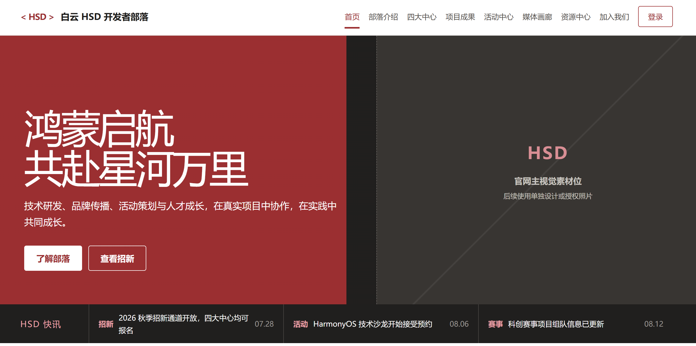
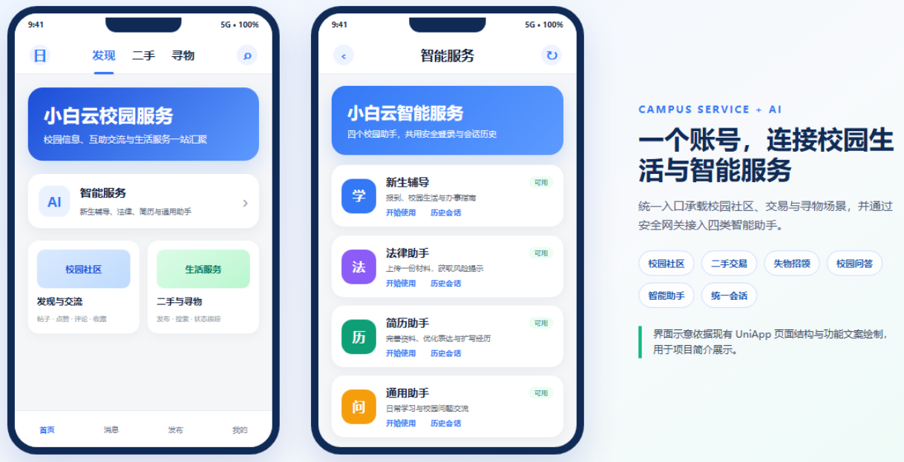
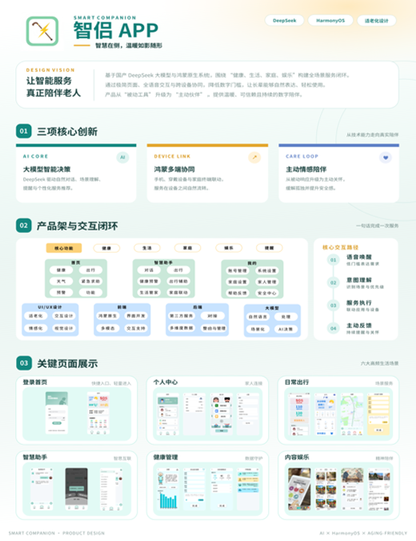
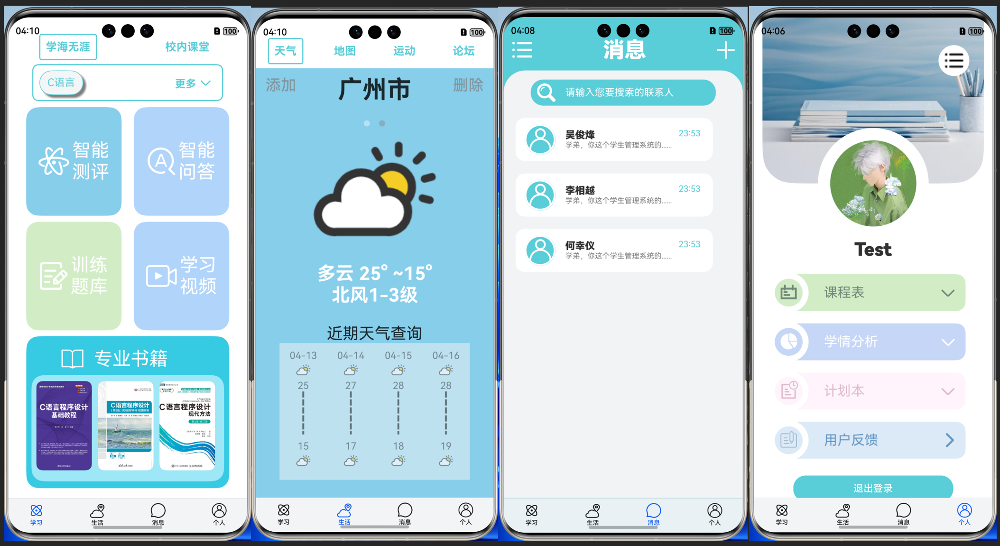
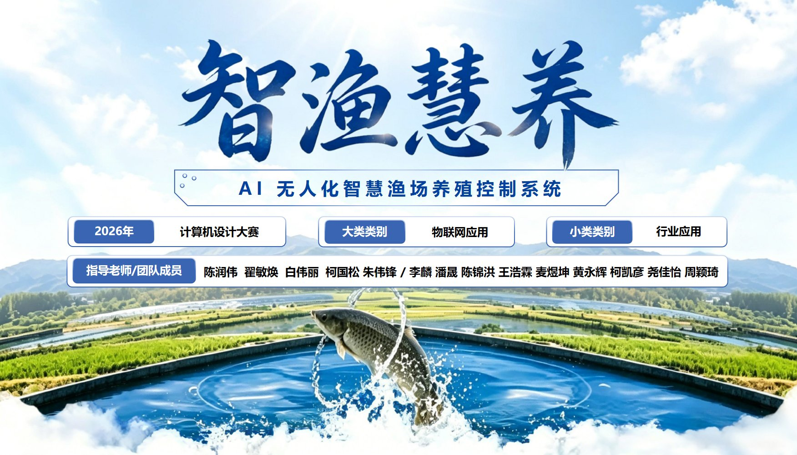
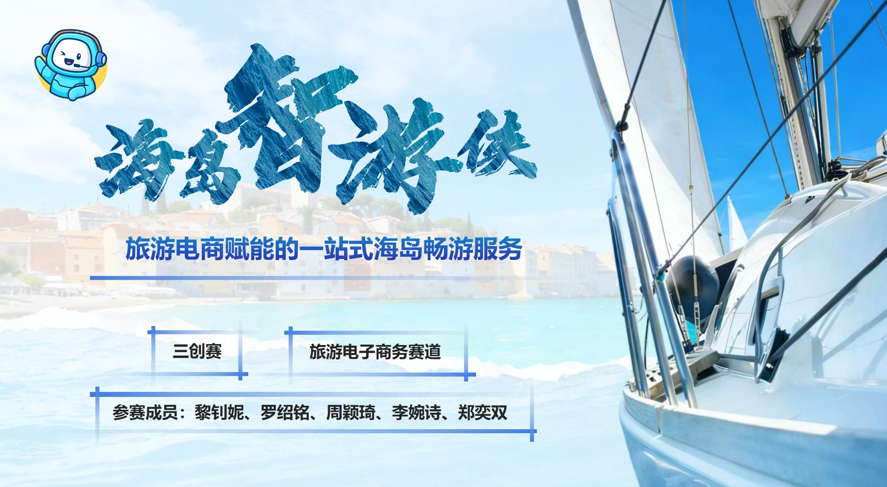
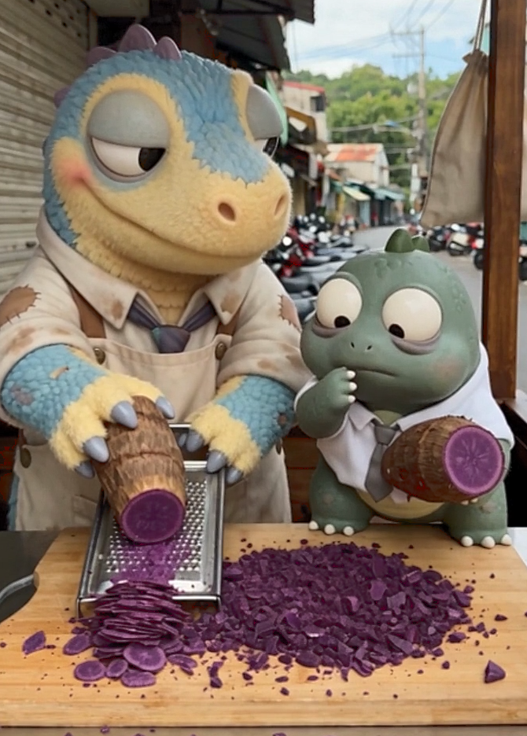
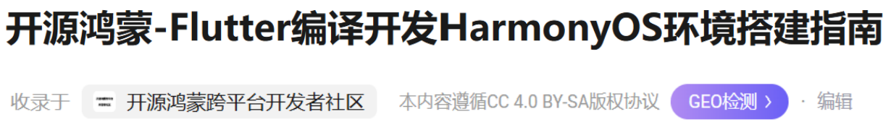
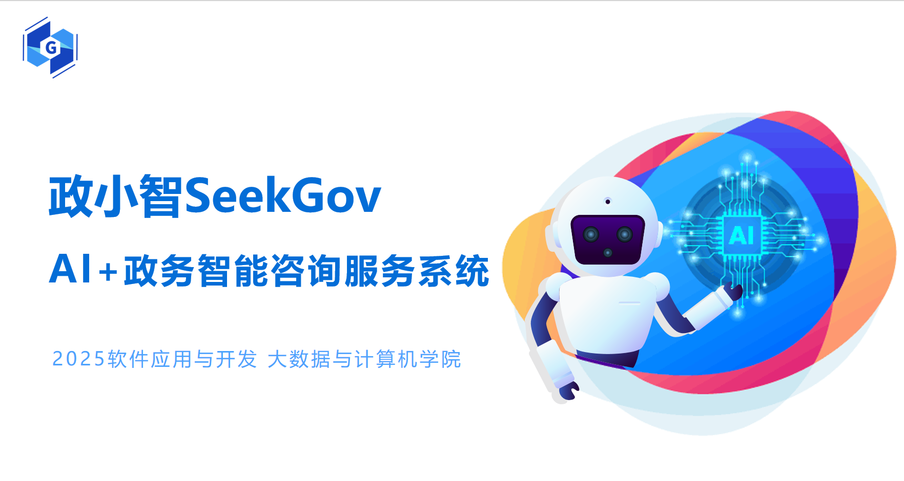
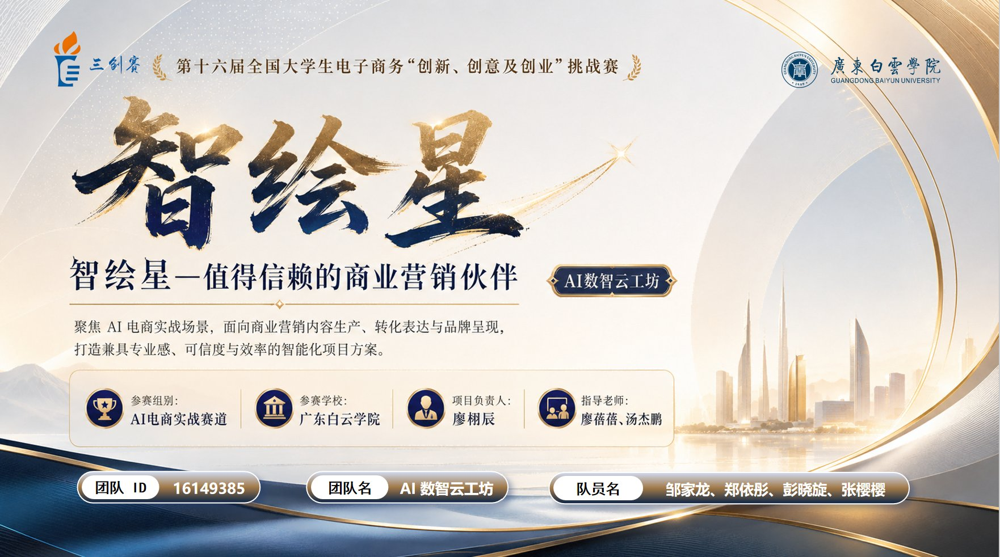

Selected Works
13 Projects · 2024—2026华为HSD招新网站
2646 × 1320
2646 × 1320

小白云
1218 × 624
1218 × 624

智能伴侣
520 × 676
520 × 676

智学领航
2108 × 1151
2108 × 1151

智渔慧养
1752 × 1002
1752 × 1002

智游侠
1776 × 978
1776 × 978

智游侠 小程序
1289 × 2000
1289 × 2000
口播视频剪辑
997 × 659
997 × 659
虚拟萌物 Yingoo
670 × 936
670 × 936

政务数字门户
2792 × 1338
2792 × 1338

CSDN 博客
1230 × 176
1230 × 176

政小智 SeekGov
1764 × 940
1764 × 940

智绘星
1762 × 982
1762 × 982
